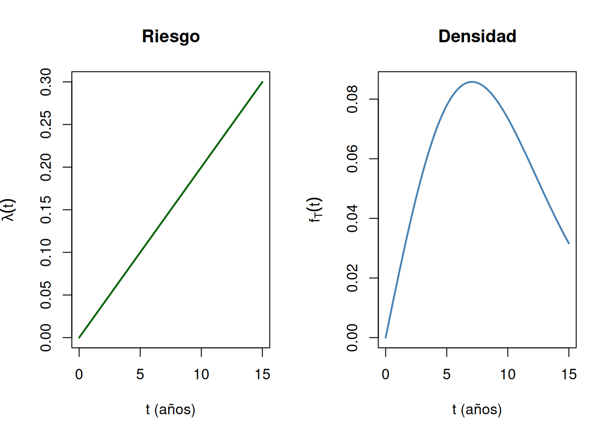

De la probabilidad de fallar en el próximo instante a la tasa de falla, y de ahí a la Weibull, la Gompertz y la de Makeham
La función de falla y la función de riesgo (hazard) de un tiempo de vida y sus funciones de probabilidad.
Autor
Arturo Sanjuán
Fecha de publicación
13 de octubre de 2026
En la sección anterior la exponencial salió de la ausencia de memoria: el tiempo que un componente ya lleva funcionando no cambia la probabilidad de que falle en lo que viene. Casi ningún componente real se comporta así, un cojinete se desgasta y una persona envejece. Esta sección suelta esa condición y pregunta por el objeto que sí se puede medir en cada instante: qué tan probable es que falle justo ahora, dado que ha sobrevivido hasta aquí.
1 La función de riesgo
Sea \(T\) la variable aleatoria que mide el tiempo de duración de un componente dado, con función de distribución \(F_T\) y densidad \(f_T\). La probabilidad de que el componente falle en el siguiente intervalo de longitud \(\Delta t\), sabiendo que ha sobrevivido hasta el tiempo \(t\), se llama la función de falla:
La igualdad es la definición de probabilidad condicional (el evento \(\{t<T\le t+\Delta t\}\) está contenido en \(\{T>t\}\)), y la aproximación es la receta de siempre: la probabilidad de un intervalo chiquito es la densidad por el ancho.
El cociente \(f_T(t)/(1-F_T(t))\) no es una probabilidad, es una tasa: lo que sí es una probabilidad es esa tasa multiplicada por un \(\Delta t\) chiquito, igual que \(f(x)\,dx\). Esto sugiere la siguiente definición.
TipDefinición: función de riesgo
La función de riesgo (en inglés, hazard) de \(T\) es
Así, \(\lambda(t)\,\Delta t\) es, aproximadamente, la probabilidad de fallar en los próximos \(\Delta t\) sabiendo que se sobrevivió hasta \(t\).
NotaTarea
Demuestre que si el riesgo es constante, es decir \(\lambda(t)=\lambda\) para todo \(t\ge0\) con \(\lambda>0\), entonces \(T\sim\text{Exponencial}(\lambda)\).
Note la dirección de la pregunta. Dada una distribución, la fórmula de arriba entrega su riesgo. Lo que sigue va al revés: se propone un riesgo razonable y se despeja la distribución.
2 La distribución Weibull
Si el riesgo no es constante, la propuesta más simple es que sea una potencia del tiempo:
Una primitiva del coeficiente \(\alpha\beta\,t^{\beta-1}\) es \(\alpha t^\beta\), así que el factor integrante es \(e^{\alpha t^\beta}\). Multiplicando la ecuación por él, el lado izquierdo es una derivada exacta:
Se dice que \(T\) tiene distribución Weibull de parámetros \(\alpha\) y \(\beta\).
ImportanteEl caso \(\beta=1\)
Con \(\beta=1\) el riesgo es la constante \(\alpha\), y las fórmulas anteriores dan \(F_T(t)=1-e^{-\alpha t}\) y \(f_T(t)=\alpha e^{-\alpha t}\): la exponencial de parámetro \(\alpha\). La Weibull contiene a la exponencial como el caso de riesgo constante, y para \(\beta\ne1\) describe componentes cuyo riesgo cambia con el tiempo.
NotaTarea
Demuestre las fórmulas de la media y la varianza de la distribución Weibull.
NotaTarea
Encuentre las funciones de densidad y de distribución acumulada de \(T\) si el riesgo propuesto por Gompertz es
Haga lo mismo con el riesgo de Makeham, \(\lambda(t)=\gamma+\alpha\beta^t\), con \(\gamma>0\).
ImportanteNota histórica
Las tres leyes de esta sección nacieron en oficios distintos, y lo único que las separa es cómo crece el riesgo \(\lambda(t)\). Benjamin Gompertz, actuario inglés, propuso en 1825 (Philosophical Transactions of the Royal Society) que la fuerza de mortalidad humana crece geométricamente con la edad, \(\lambda(t)=\alpha\beta^t\). Treinta y cinco años después, William Makeham (1860, Journal of the Institute of Actuaries) sumó una constante \(\gamma\) para recoger el riesgo que no depende de la edad, como accidentes e infecciones agudas: \(\lambda(t)=\gamma+\alpha\beta^t\).
La Weibull llegó desde la ingeniería. Entre 1932 y 1936, Rosin, Rammler, Sperling y Bennett la obtuvieron midiendo el tamaño de partículas de carbón pulverizado y de cemento (en esa literatura se la llama distribución RRSB). En 1939 Waloddi Weibull, ingeniero sueco, llegó a la misma familia de forma independiente estudiando la resistencia de los materiales, y en 1951 (Journal of Applied Mechanics) mostró lo ampliamente que servía. Su éxito en confiabilidad se explica por el riesgo \(\lambda(t)=\alpha\beta t^{\beta-1}\): la forma \(\beta\) decide si el riesgo decrece (\(\beta<1\)), es constante (\(\beta=1\), la exponencial de Erlang) o crece (\(\beta>1\)). Actuaría e ingeniería, dos oficios sin relación, frente a la misma pregunta de fondo: cómo envejece el riesgo.
TipEjemplo aplicado: la vida de una bomba de agua
El tiempo de vida \(T\), en años, de la bomba de un acueducto rural se modela con una Weibull de parámetros \(\alpha=0{,}01\) y \(\beta=2\). Como \(\beta>1\), el riesgo crece con el uso, que es el caso del desgaste:
mientras que una bomba nueva sobrevive esos mismos \(3\) años con probabilidad \(P(T>3)=e^{-0{,}09}\approx0{,}9139\). La bomba usada tiene menos probabilidad de seguir funcionando: aquí no hay ausencia de memoria, el tiempo ya transcurrido sí cuenta. Con una exponencial las dos probabilidades coincidirían.
Función de falla frente a riesgo. Para \(t=5\) y \(\Delta t=0{,}1\), el riesgo da \(\lambda(5)\,\Delta t=0{,}1\cdot0{,}1=0{,}01\), y la probabilidad condicional exacta es \(1-e^{-0{,}01\,(5{,}1^2-5^2)}\approx0{,}01005\). La aproximación \(\lambda(t)\,\Delta t\) es muy buena para un \(\Delta t\) chiquito.
alfa <-0.01# parámetro alpha de la claseforma <-2# parámetro beta de la claseescala <- alfa^(-1/forma) # escala de R: scale = alpha^(-1/beta), aquí 10 años# probabilidad de sobrevivir al tiempo tS <-function(t) pweibull(t, shape = forma, scale = escala, lower.tail =FALSE)cat("P(T > 5) =", round(S(5), 4), "\n")
# bomba con 5 años de uso frente a bomba nueva, 3 años máscat("P(T > 8 | T > 5) =", round(S(8) /S(5), 4), "\n")
P(T > 8 | T > 5) = 0.6771
cat("P(T > 3) =", round(S(3), 4), "\n")
P(T > 3) = 0.9139
# función de falla en (5, 5.1] frente a riesgo por anchoriesgo <-function(t) alfa * forma * t^(forma -1)cat("exacta =", round((S(5) -S(5.1)) /S(5), 5), "\n")
par(mfrow =c(1, 2))curve(riesgo(x), from =0, to =15, n =1000, col ="darkgreen", lwd =2,xlab ="t (años)", ylab =expression(lambda(t)), main ="Riesgo")curve(dweibull(x, shape = forma, scale = escala), from =0, to =15, n =1000,col ="steelblue", lwd =2, xlab ="t (años)", ylab =expression(f[T](t)),main ="Densidad")

Figura 1: Riesgo y densidad del tiempo de vida de la bomba, Weibull con alpha = 0,01 y beta = 2
3 Panel interactivo: riesgo, densidad y acumulada
El siguiente panel dibuja la función de riesgo, la densidad o la función de distribución de la Weibull, la Gompertz y la de Makeham, con sus parámetros ajustables. Mueva los parámetros y compare cómo cambia la forma del riesgo en cada modelo. Los valores de \(E[T]\) y \(\text{Var}(T)\) son numéricos, sirven para contrastar con lo que usted demuestre.